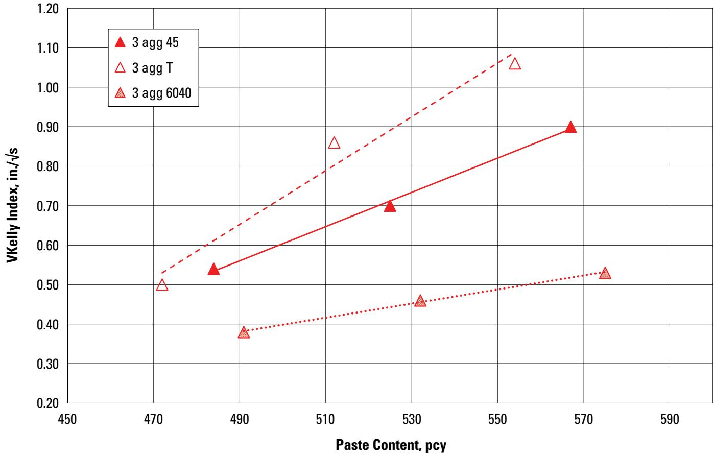
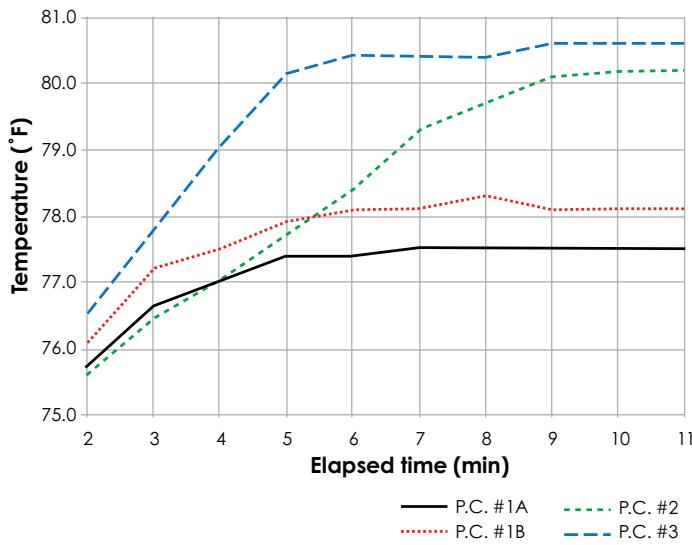
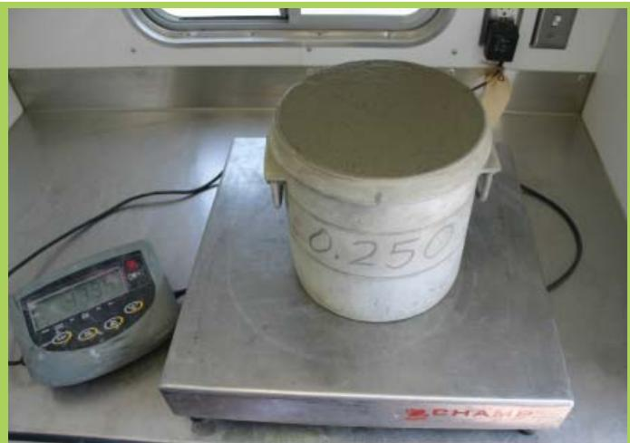
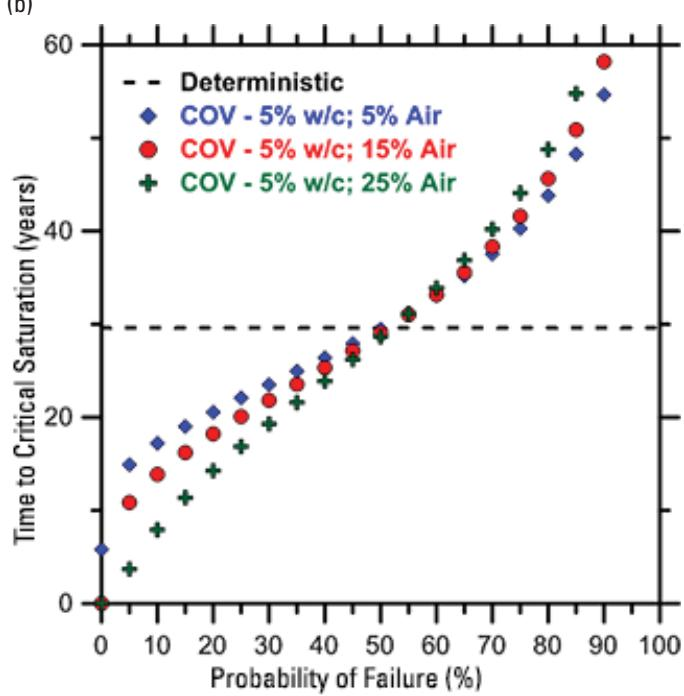
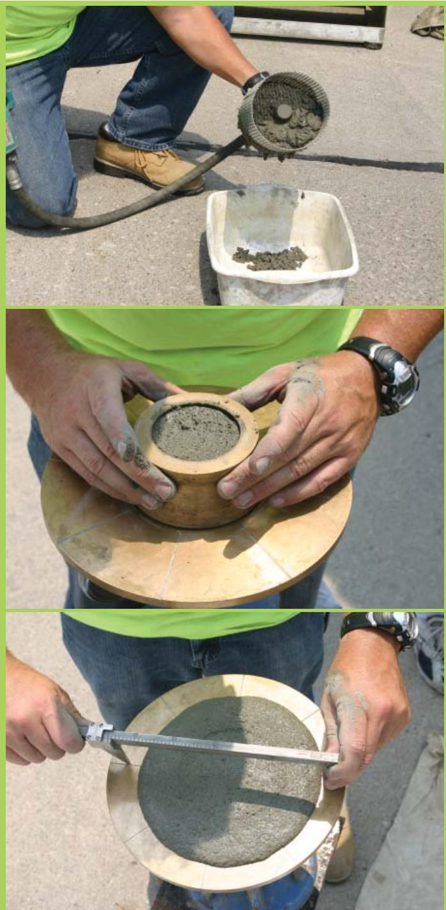
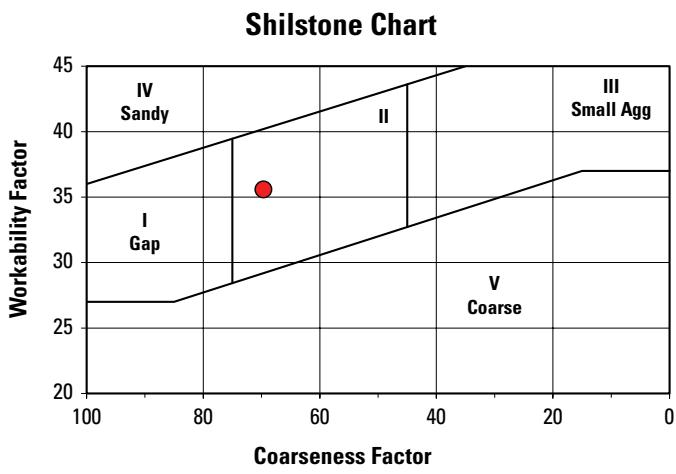

Cement Content and Workability Optimization
Cement Content and Workability Optimization is the practice of proportioning the full set of concrete ingredients—portland cement, supplementary cementitious materials, fine and coarse aggregates, water, air, and admixtures—to achieve a plastic, cohesive fresh mix that remains readily remoldable without being overwet[2]. The workability of the mix is governed primarily by the water‑to‑cement (or cementitious) ratio and entrained‑air content, which together control slump, flow and uniformity, while chemical admixtures such as dispersing agents reduce inter‑particle attraction to increase fluidity without adding extra water[1][2]. Because each constituent has a distinct specific gravity, any shift in proportion—most often water or air—alters the fresh‑mix unit weight, providing an indirect but reliable indicator that the targeted cement content and workability have been maintained for effective placement, compaction and long‑term durability[6].
Sources (6)
Material purpose and applicability
Cement Content and Workability Optimization refers to achieving a plastic consistency in fresh concrete—a state where the mix contains sufficient cement and fine particles to be cohesive while remaining readily remoldable and workable, yet without being overwet. In a pavement system this condition allows the concrete to be placed, shaped, and compacted effectively, ensuring uniformity and preventing defects that could compromise durability. [2]
[2] — Ch. 10 (p. 326)
Composition and characteristics
The material defined as cement content and workability optimization consists of the full set of concrete ingredients—portland cement, supplementary cementitious materials (SCMs), fine aggregate, coarse aggregate, admixtures, air, and water. Cement content is quantified by the mass of cement per unit volume of concrete, while the water‑to‑cement ratio and entrained air together govern fresh‑state workability. The water‑to‑binder relationship is expressed as the ratio of the amount of water, exclusive only of that absorbed by the aggregates, to the amount of portland cement and other cementitious material in the mix. Fine‑aggregate proportion is critical; a concrete mixture that is deficient in sand content leads to poor workability or finishing characteristics. Chemical admixtures such as dispersing agents modify inter‑particle forces to increase fluidity without changing binder content, and air‑entraining admixtures create stable, relatively large air voids that lower the degree of saturation and improve durability. Because all constituents have different specific gravities, any shift in unit weight signals a change in proportioning—most commonly water or entrapped air—which directly influences slump, flow, and overall uniformity. [1][2][6]
The following figure illustrates how these proportioning factors influence the example mixture design’s coarseness and workability.
 Example mixture design coarseness factor and workability factor [6]
Example mixture design coarseness factor and workability factor [6]
The figure displays a chart plotting the relationship between the coarseness factor (percent) on the horizontal axis and the workability factor (percent) on the vertical axis. Two parallel blue lines define an allowable project tolerance band, while a red dashed rectangle highlights a specific region of interest containing two data points: one representing the project target and another for the mixture design.
[1] — Ch. 2 (pp. 12–13); [2] — Ch. 6 (pp. 148–162), Ch. 7 (p. 211), Ch. 9 (p. 280), Ch. 10 (pp. 315–333); [6] — Ch. 7 (pp. 70–92)
The guides agree that any change in the makeup of a concrete mix—whether it is the water‑to‑cement ratio, the amount of entrained air, the proportion of sand, or the type of cementitious material—directly influences both workability and the hardened properties. “Increasing the water content of concrete will generally increase the ease with which the concrete flows,” but the same increase “increased water content will reduce the strength and increase the permeability of the hardened concrete” and also raises shrinkage (“Shrinkage also increases with increased water content”). A higher w/c ratio also speeds moisture movement: “increasing the w/c ratio increases the transport of water through concrete, resulting in more rapid saturation,” so that “As the w/c ratio increases and air content decreases, the concrete is closer to critical saturation after only a short time of exposure to water.” Conversely, adding entrained air delays this condition because “increasing the air content reduces the initial degree of saturation, requiring a longer time for the concrete to reach critical saturation.” Strength trends follow the opposite direction: “Strength increases as the w/cm ratio decreases because the capillary porosity decreases,” yet mixes with identical w/c ratios can still differ in strength when “concretes with the same w/cm ratio but different constituents are expected to have different strengths.”
Workability is further affected by fine‑aggregate gradation, cement chemistry, mixing time and temperature, all of which “interact to affect mortar flow.” Insufficient sand makes the mix stiff (“A concrete mixture that is deficient in sand content, a condition associated with poor workability or finishing characteristics”), while chemical admixtures boost fluidity: “Admixtures capable of increasing fluidity of pastes, mortar or concretes by reduction of inter‑particle attraction.” Because each ingredient has its own density—“All of these materials have different specific gravities”—a shift in any component shows up as a change in unit weight, and “A variation in the unit weight of a mixture will indicate a change in proportioning of the mixture, often in the water or air content.” Since a flow test measures only overall slump, “Uniformity of the mortar flow is the primary concern” for quality control. [1][2][6]
The following figure illustrates how aggregate gradation influences workability relative to paste content.

Effect of aggregate gradation on workability as a function of paste content [2]The figure plots the V-Kelly Index, an indicator of mortar flow and uniformity, against varying paste content for three distinct aggregate gradations. The data demonstrates that for a given paste content, different aggregate characteristics result in significantly different workability levels.
[1] — Ch. 2 (pp. 12–13); [2] — Ch. 6 (p. 162), Ch. 7 (p. 215), Ch. 9 (p. 280), Ch. 10 (pp. 319–332); [6] — Ch. 7 (pp. 70–92)
Key material properties
The performance of cement‑content and workability optimization is governed by interrelated physical, mechanical, chemical and thermal characteristics. Physically, reducing the water‑to‑cement (w/c) ratio lowers capillary porosity, which directly raises compressive strength: Strength increases as the w/cm ratio decreases because the capillary porosity decreases. Mechanically, a fresh mix must retain sufficient plasticity; rapid stiffening can jeopardize placement when it occurs with little heat release: rapid development of rigidity in a freshly mixed portland cement paste, mortar, or concrete without the evolution of much heat. Chemically, fluidity is controlled by admixture action and cementitious reactions; admixtures that lower inter‑particle attraction increase workability: Admixtures capable of increasing the fluidity. Thermally, temperature influences both reaction rates and viscosity; together with water content, fine‑aggregate gradation, air content, mixing time and cement chemistry they dictate mortar flow: Water content, fine aggregate gradation, cementitious chemistry, mixing time, air content, and concrete temperature all interact to affect mortar flow. Monitoring unit‑weight variations provides an indirect check on these proportions because changes in the specific gravities of the constituents reflect shifts in water or air content. [2][6]
The following figure illustrates cementitious heat generation using a coffee cup test to demonstrate the thermal characteristics discussed above.

Cementitious heat generation (coffee cup) test results [6]The figure displays temperature profiles over elapsed time for four different cementitious mixtures, labeled P.C. #1A, P.C. #1B, P.C. #2, and P.C. #3. The results show that the temperature profiles differ significantly between the tests, with some mixtures reaching higher maximum temperatures than others. These variations in heat generation can be used as a troubleshooting aid when changes in workability or early stiffening occur, helping to identify if the cementitious materials contributed to the problem.
[2] — Ch. 6 (p. 162), Ch. 7 (p. 215), Ch. 9 (p. 280), Ch. 10 (pp. 319–332); [6] — Ch. 7 (pp. 70–92)
Measurement of cement content begins with Batch Weights – the practice of recording “The weights of the various materials (cement, water, the several sizes of aggregate, and admixtures) that compose a batch of concrete.” The primary ratio used to characterize workability is the Water/Cementitious Materials Ratio, defined as “The w/cm ratio is simply the mass of effective water divided by the mass of cementitious materials (portland cement, blended cement, fly ash, slag cement, silica fume, and natural pozzolans).” Design guidance requires that “The w/cm ratio used in the mixture design should be the lowest value required to meet both strength and durability requirements.” An alternative classification employs the Cement/Aggregate Ratio, expressed as “The ratio, by weight or volume, of cement to aggregate,” which directly relates cement proportion to workability.
On‑site workability is further assessed with a mortar‑flow test. The test records how far the fresh mix spreads and therefore captures the combined influence of several factors: “Water content, fine aggregate gradation, cementitious chemistry, mixing time, air content, and concrete temperature all interact to affect mortar flow.” Because the test cannot isolate any single factor, it is noted that “A flow test cannot identify which of these factors is changing—it simply measures the flow of a given mortar,” and consequently “Uniformity of the mortar flow is the primary concern.”
In addition, practitioners monitor the mixture’s unit weight (density). Since each component—“portland cement”, “supplementary cementitious materials (SCMs)”, fine and coarse aggregates, admixtures, air and water—has “different specific gravities,” a “variation in the unit weight of a mixture will indicate a change in proportioning of the mixture, often in the water or air content.” Tracking these density variations allows the mix to be classified as remaining within or deviating from the intended cement‑content and workability range. [2][6]
The following figure illustrates the unit weight test equipment used to monitor these density variations.

A bucket of fresh concrete is being weighed on a digital scale to determine its unit weight. [6]The image displays the apparatus used for a unit weight test, featuring a container filled with plastic concrete resting on a platform scale connected to a digital readout.
[2] — Ch. 7 (p. 211), Ch. 10 (pp. 315–333); [6] — Ch. 7 (pp. 70–92)
Behavior and mechanisms
The behavior of cement content and workability results from a combination of physical, chemical, and mechanical mechanisms. Physically, the mix is defined by “A concrete mix design is composed of several ingredients: portland cement, SCMs, fine aggregate, coarse aggregate, admixtures, air, and water.” All components have distinct densities—“All of these materials have different specific gravities”—so any shift in their proportions changes the fresh‑mix unit weight; such a change is reflected by “A variation in the unit weight of a mixture will indicate a change in proportioning of the mixture, often in the water or air content.” In addition, “the amount of water, the gradation of fine aggregates, the entrained air content and the temperature of the concrete dictate how easily the particles can move past one another,” and because each component’s specific gravity influences unit weight—“Because each component—portland cement, SCMs, fine and coarse aggregates, admixtures, air, and water—has its own specific gravity, any shift in their relative proportions alters the unit weight of the fresh concrete; such a change usually reflects variations in water or entrapped‑air content that directly affect fluidity.”
Chemically, workability is enhanced by “Dispersing Agent” and “Admixtures capable of increasing the fluidity of pastes, mortar or concretes by reduction of interparticle attraction,” while “the nature of the cementitious reactions—cementitious chemistry—controls the development of paste viscosity and early stiffening.”
Mechanically, the shear introduced during “the duration of mixing (mixing time) imposes shear that further modifies flow characteristics.” An “ample content of cement and fines” together with a balanced water level (“not overwet”) provides cohesion that yields a plastic mix described as “readily remoldable and workable.” The combined variables also affect the consistency of the fresh batch, where “all these variables together determine the uniformity of mortar flow, which is the key quality indicator.” [2][6]
[2] — Ch. 9 (p. 280), Ch. 10 (pp. 319–326); [6] — Ch. 7 (pp. 70–92)
Durability and deterioration
Durability of a concrete mix that is optimized for cement content and workability is compromised by several interrelated mechanisms. Freeze‑thaw damage initiates once the degree of saturation (DOS) exceeds a critical value, typically around 85 %, and any increase in water‑to‑cement ratio accelerates moisture transport, causing the critical DOS to be reached more quickly. Insufficient or variable air entrainment raises the initial DOS and shortens the time before freeze‑thaw damage begins, even when average mix proportions remain unchanged. Adding extra water improves flowability but simultaneously reduces compressive strength, increases permeability, and can lead to segregation; it also heightens shrinkage, all of which erode long‑term performance. A further deterioration pathway is false set – the rapid development of rigidity in fresh paste without significant heat evolution – which prematurely cuts slump, hampers placement, and may be described as premature stiffening or hesitation set. Finally, an undersanded mix, deficient in sand content, exhibits poor workability and finishing characteristics, preventing the achievement of a uniform, durable concrete matrix. [1][2]
[1] — Ch. 2 (pp. 12–13); [2] — Ch. 7 (p. 215), Ch. 10 (pp. 320–332)
The guides agree that a high water‑to‑cement (or cementitious‑materials) ratio is a primary factor that raises susceptibility: it increases capillary porosity, lowers strength, heightens permeability, promotes segregation and shrinkage, and accelerates the approach to critical saturation. Targeting the lowest feasible w/c ratio—often achieved with admixtures or optimized proportions—reduces these risks. Low entrained‑air content compounds the problem; when air is insufficient the mix reaches the critical degree of saturation quickly, especially under continuous water exposure without drying, making it more vulnerable to freeze–thaw damage. Raising and controlling air content, or incorporating supplementary cementitious materials, lowers the initial degree of saturation and slows secondary sorptivity, thereby delaying deterioration. Adequate fine‑aggregate (sand) content is also essential: mixes that are undersanded lack sufficient sand to provide flow and finishing, undermining the intended balance between cement content and workability and increasing the likelihood of poor workability‑related durability issues. In summary, susceptibility is heightened by high w/c ratio, low or highly variable air content, continuous wet exposure, and insufficient sand; it is reduced by low w/c ratio, higher and well‑controlled entrained air (or SCMs), and proper sand proportioning. [1][2]
The figure below illustrates how variations in the water-to-cement ratio and entrained air volume affect the time required for concrete to reach critical saturation.

The influence of w/c ratio and air volume on the time required for 20 percent of the concrete to reach critical saturation (assuming 5 percent COV in w/c ratio and 15 percent COV in air content) [1]The figure plots the probability of failure against the time required for concrete to reach critical saturation, comparing a deterministic model with scenarios involving varying entrained-air volumes.
[1] — Ch. 2 (pp. 12–13); [2] — Ch. 6 (p. 162), Ch. 7 (pp. 211–215), Ch. 10 (p. 332)
Material interactions and compatibility
The cement portion of a concrete mix does not act in isolation; it collaborates with aggregates, water, admixtures, and other constituents to determine paste demand and workability. The amount of cement in a concrete mix works together with the aggregate quantities and the water‑to‑cement ratio to set the paste volume needed for filling gel and capillary pores; this paste must also accommodate the absorption characteristics of high‑absorption aggregates or reactive mineral additives. Dispersing agents are chemical admixtures that improve workability by weakening the attractive forces among cement particles, aggregates and any mineral additives present in a mix, allowing a given cement content to produce a more fluid paste without additional water. Cement content, reflected in the mix’s cementitious chemistry, interacts with water amount, fine‑aggregate gradation, air content, mixing time and concrete temperature to control how readily the mortar flows. Because these interactions are interdependent, quality control emphasizes that uniformity of the mortar flow is the primary concern across batches. [1][2][6]
[1] — Ch. 2 (pp. 12–13); [2] — Ch. 10 (pp. 319–333); [6] — Ch. 7 (p. 70)
Influence of production and placement
Mixing practices that incorporate air‑entraining admixtures create a stable network of air voids, lowering the fresh concrete’s initial degree of saturation and thereby postponing the 85 % critical saturation threshold at which freeze‑thaw damage begins; this enhances durability. When a rapid stiffening—known as false set—occurs in freshly mixed paste, mortar or concrete, additional mixing without adding water can break down the premature rigidity, restoring plasticity and preserving workability so that the intended strength and durability are achieved. The guides do not provide specific guidance on placement, compaction, finishing, or curing with respect to cement content and workability optimization. [1][2]
[1] — Ch. 2 (pp. 12–13); [2] — Ch. 10 (p. 320)
During construction the most consequential defect for cement content and workability is inaccurate batching of the mix ingredients. Introducing excess water during mixing is the most critical construction variation affecting long‑term performance; while it improves flow, the higher water content lowers the hardened concrete’s strength, raises its permeability, encourages segregation, and accelerates shrinkage, all of which undermine durability and stability over time. The most critical construction‑related defect … is a shift in the mixture’s unit weight, which signals an unintended change in proportioning—usually involving excess or insufficient water or entrapped air. False set—a premature stiffening of fresh paste, mortar or concrete—manifests as an abrupt gain in rigidity without significant heat development; if it persists, the loss of plasticity compromises uniform placement and may later translate into reduced strength and durability. Construction‑induced variations that most strongly affect the long‑term performance of cement content and workability are those that disturb mix proportions and consequently alter the mixture’s unit weight and flow characteristics. Water content, fine aggregate gradation, cementitious chemistry, mixing time, air content, and concrete temperature all interact to affect mortar flow. Uniformity of the mortar flow is the primary concern. [2][6]
[2] — Ch. 6 (pp. 148–162), Ch. 7 (p. 215), Ch. 9 (p. 280), Ch. 10 (pp. 320–332); [6] — Ch. 7 (pp. 70–92)
Selection, specification, and improvement
The guides state that “The chief criterion for specifying cement content and workability is the required concrete strength, which is governed by the water‑to‑cementitious materials ratio”; consequently designers select the “lowest water‑to‑cementitious‑materials ratio that still satisfies the required strength and durability for the project.” “Fresh concrete mixtures must possess the workability, including mobility, compactability, stability, and freedom from segregation, required for the job conditions,” so “Consequently, water (and cement) levels are adjusted to achieve the necessary flow without compromising strength, durability, or causing segregation.” In addition, selection is verified through two measurable performance indicators: “uniform mortar flow across the batch,” which reflects the combined effect of water content, fine‑aggregate gradation, cementitious chemistry, mixing time, air content, and concrete temperature (“Water content, fine aggregate gradation, cementitious chemistry, mixing time, air content, and concrete temperature all interact to affect mortar flow”); “Uniformity of the mortar flow is the primary concern.” The second indicator is “achievement of a target unit weight for the mix,” because “A variation in the unit weight of a mixture will indicate a change in proportioning of the mixture, often in the water or air content.” [2][6]
[2] — Ch. 6 (p. 162), Ch. 7 (pp. 211–215); [6] — Ch. 7 (pp. 70–92)
Across the sources, a coordinated set of mix‑design tweaks, admixture selections, and on‑site checks is presented as the most effective way to improve cement content accuracy and workability while mitigating common weaknesses. First, the use of air‑entraining agents is emphasized; “Air‑entraining admixtures stabilize air bubbles generated during mixing to add large (approximately 0.002 to 0.050 in.), stable, air-filled voids to the paste portion of the concrete” and “Consistent quality control of air content—minimising its variability during batching—is essential to ensure the designed air‑void system and sustain durability.” Reducing the water‑to‑cement ratio is also advised because “lowering the water‑to‑cement ratio also reduces water transport, keeping the mix farther from the critical saturation threshold.” Supplementary cementitious materials (SCMs) are repeatedly recommended: they both lower effective water demand and curb moisture uptake, as shown by “Adding supplementary cementitious materials can markedly cut secondary sorptivity, limiting long‑term moisture uptake” and “Improving cement content and workability can be achieved by selecting supplemental cementitious materials—such as fly ash, slag cement, silica fume or natural pozzolans—in place of part of the Portland cement and then targeting the lowest feasible water‑to‑cementitious‑materials ratio that still satisfies strength and durability criteria.”
Accurate batching is identified as a primary quality‑control step; “Ensuring that all batch measurements are taken by mass rather than by volume, as required by most specifications, provides a primary quality‑control step for cement content and workability.” Tight tolerances (±1 % for cementitious materials, ±2 % for aggregates, ±1 % for water, ±3 % for admixtures) keep the water‑cement ratio stable and limit slump variation. Chemical aids further enhance flow without extra water: “Incorporating a dispersing agent into the mix is an effective way to boost workability without raising water content,” and tailored superplasticizers can fine‑tune rheology.
Real‑time monitoring of unit weight offers an early warning of proportioning errors; “Continuous measurement of the mixture’s overall unit weight provides an on‑site check for unintended shifts in water or entrained‑air levels; any deviation flags a proportioning error that can be corrected before placement.” When premature stiffening occurs, the guides advise remedial mixing: “When premature stiffening (false set) occurs, rigidity can be dispelled and plasticity regained by further mixing without addition of water.”
Workability is also governed by several interacting variables. The guidance states that “Improving workability while maintaining cement content can be achieved by carefully controlling the interacting variables that govern mortar flow—specifically adjusting water content, selecting an appropriate fine‑aggregate gradation, tailoring the cementitious chemistry (for example through admixtures), regulating mixing time, managing air entrainment, and keeping concrete temperature within a stable range.” Maintaining “Uniformity of the mortar flow is the primary concern” ensures consistent placement and finish quality. Together, these practices—air‑entrainment, low w/c ratios, SCM substitution, mass batching with tight tolerances, dispersing agents, unit‑weight surveillance, sand‑balance checks, on‑site remixing, and comprehensive control of water, aggregate gradation, mixing time, temperature, and air content—constitute a robust strategy for optimizing cement content and workability. [1][2][6]
The following figure illustrates the relationship between workability and aggregate characteristics by plotting the workability factor against the coarseness factor for combined aggregates.
 Workability factor vs. coarseness factor for combined aggregate [1]
Workability factor vs. coarseness factor for combined aggregate [1]
The figure displays a chart plotting Workability (percent) against Coarseness Factor (percent), divided into five distinct zones labeled I through V. It illustrates the relationship between aggregate gradation and mix consistency, showing that optimized gradations typically lead to a lower w/c ratio.
[1] — Ch. 2 (pp. 12–13); [2] — Ch. 6 (p. 148), Ch. 7 (p. 211), Ch. 9 (pp. 270–280), Ch. 10 (pp. 319–332); [6] — Ch. 7 (pp. 70–92)
Performance evaluation and implications
The assessment of cement content and workability optimization relies on a hierarchy of evidence. Laboratory testing of concrete strength at multiple ages and curing conditions links the water‑to‑cementitious materials ratio to performance, providing validation that also mirrors field behavior and long‑term durability trends. The principal laboratory evidence for assessing cement content and workability optimization is the mortar flow test, which captures the combined influence of water, fine aggregate gradation, cement chemistry, mixing time, air content, and temperature on how readily the mix moves. While this test does not pinpoint which specific factor has changed, it provides a direct measure of the uniformity of mortar flow, which is the key quality indicator for workability. Field and plant personnel monitor fresh‑mix properties; measuring unit‑weight quickly flags shifts in proportioning caused by changes in water or entrapped air. Finally, on‑site verification of mix proportions is achieved by recording the batch weights of each constituent, ensuring that the intended quantities of cement, aggregates, water, and admixtures are actually delivered. [2][6]
The mortar flow test described above is conducted using the equipment shown in the following figure.

Mortar flow testing equipment [6]The figure displays the apparatus used for mortar flow testing, including a conical brass mold filled with hydraulic-cement mortar and calipers for measuring dimensions.
[2] — Ch. 6 (p. 162), Ch. 9 (p. 280), Ch. 10 (p. 315); [6] — Ch. 7 (p. 70)
The cement amount, together with the water‑to‑cement ratio and entrained‑air level, governs how quickly a concrete pavement reaches the critical degree of saturation that triggers freeze‑thaw damage. “As the w/c ratio increases and air content decreases, the concrete is closer to critical saturation after only a short time of exposure to water.” “increasing the air content reduces the initial degree of saturation, requiring a longer time for the concrete to reach critical saturation”. Consequently, mixtures with lower w/c or higher air can extend service life, while “higher variability in air content (5 to 15 to 25 percent COV) results in time of failure of 17.2, 13.8, and 7.9 years, respectively,” underscoring the need for tight control during design and construction.
Across sources, a lower water‑to‑cementitious material ratio also improves long‑term performance by reducing capillary porosity: “Strength increases as the w/cm ratio decreases because the capillary porosity decreases,” and “This observation holds for the entire range of curing conditions, ages, and types of cements considered.” Accordingly, “The w/cm ratio used in the mixture design should be the lowest value required to meet both strength and durability requirements.” While water addition eases placement—“Increasing the water content of concrete will generally increase the ease with which the concrete flows”—it also degrades durability: “However, increased water content will reduce the strength and increase the permeability of the hardened concrete and may result in increased segregation.”
Workability must satisfy mobility, compactability, stability, and freedom from segregation; “Fresh concrete mixtures must possess the workability, including mobility, compactability, stability, and freedom from segregation.” Adequate aggregate proportions are essential: “A concrete mixture that is deficient in sand content” leads to poor workability or finishing characteristics, which can produce surface defects that undermine durability. By balancing cement content, admixture selection, sand proportion, and w/cm ratio, designers achieve sufficient mobility for placement while minimizing durability penalties, enabling thinner or longer‑lasting pavement layers, reducing cracking, freeze‑thaw damage, chemical attack, and ultimately lowering maintenance costs. [1][2]
The modified coarseness factor chart below illustrates how these aggregate proportions influence mixture characteristics.

Modified coarseness factor chart showing workability zones for concrete mixtures. [2]The figure displays a graph with the Workability Factor on the vertical axis and the Coarseness Factor on the horizontal axis, divided into five distinct regions labeled I through V. These zones categorize concrete mixtures based on aggregate proportions, with Zone II indicating a mixture for concretes with nominal maximum aggregate size from 2 in. through ¾ in. This chart provides a method to evaluate the balance of cement content and workability by establishing coordinates for a mixture based on its coarseness and workability factors.
[1] — Ch. 2 (pp. 12–13); [2] — Ch. 6 (p. 162), Ch. 7 (pp. 211–215), Ch. 10 (pp. 320–332)
References
- Guide to the Prevention and Restoration of Early Joint Deterioration in Concrete Pavements (2016) [link]
- Integrated Materials and Construction Practices for Concrete Pavement: A State-of-the-Practice Manual (2nd edition IMCP Manual, 2019) [link]
- Best Practices Manual: Quality Control and Quality Acceptance of Concrete Airport Pavement [link]
- Field Reference Manual for Quality Concrete Pavements (2012) [link]
- Concrete Pavement Preservation Workshop Reference Manual (2008) [link]
- Testing Guide for Implementing Concrete Paving Quality Control Procedures (2008) [link]